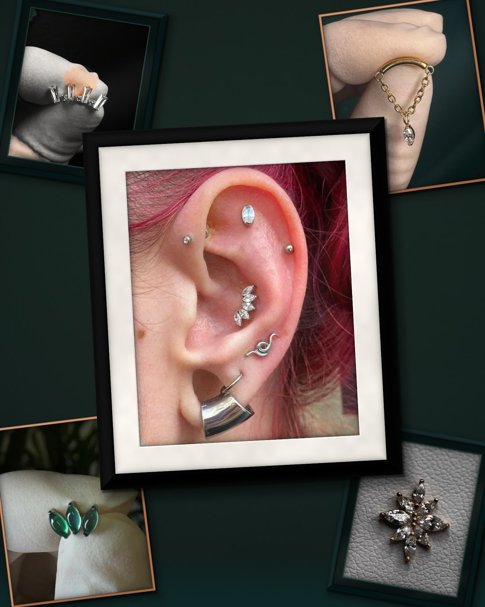
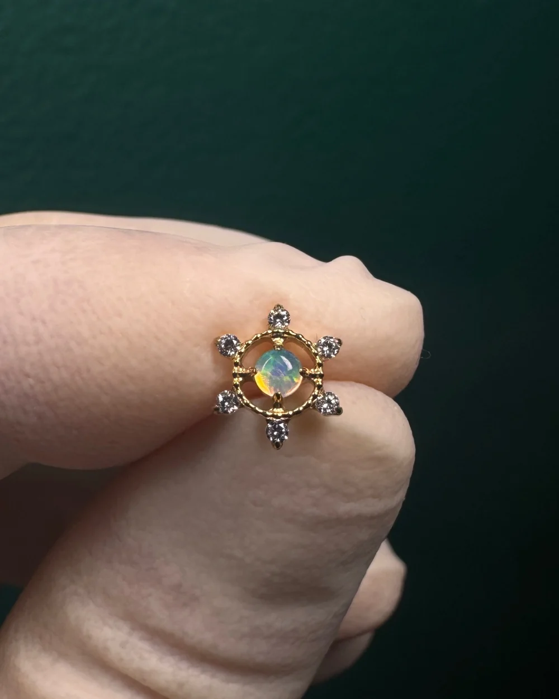

Titânio de implante
Toda a primeira colocação leva titânio ASTM F136, o mesmo grau usado em implantes cirúrgicos, ou ouro maciço de 14k e 18k.

Piercing e joalharia fina em Lisboa, desde 2014
Perfurações
Orelha, rosto e corpo, perfurados com agulha e joias em titânio de implante ou em ouro. Fotos frescas e cicatrizadas do estúdio.

Joias
Disponíveis no estúdio para uma perfuração nova ou para atualizar um piercing já cicatrizado. Toca em "Quero esta" e a peça segue no pedido.
Trabalho com Anatometal, Buddha Jewelry, Industrial Strength, Rising Piercing, Sebastienne, Tsar Jewellery, Tremun e Junipurr.
Como trabalho
Toda a primeira colocação leva titânio ASTM F136, o mesmo grau usado em implantes cirúrgicos, ou ouro maciço de 14k e 18k.
Cada perfuração é feita com agulha esterilizada de uso único. Uso agulhas Stiletto e faço parte da Stiletto Pro Team.
Depois de cicatrizar, faço o downsize e a troca para a peça que escolheres, em ouro ou titânio, com ou sem pedras.
Sou membro da APP-PT, a Associação de Piercers Profissionais de Portugal, e continuo a formar-me nos encontros anuais.

Sobre
Faço piercings desde 2014. São mais de doze anos a perfurar, a escolher joias e a desenhar orelhas com quem me procura, e foram essas pessoas que me fizeram crescer: cada anatomia especial pede uma perfuração especial.
Em 2026 abri o meu próprio estúdio nas Avenidas Novas, um espaço pensado para receber com segurança, calma e respeito, dedicado principalmente ao piercing, mas também à tatuagem.
“Quem me acompanhou nestes últimos 12 anos moldou este espaço.”
Estúdio
Avenidas Novas, Lisboa. Piercing, joalharia fina e tatuagem no mesmo espaço, com hora marcada.
Marcação
O pedido chega pronto ao WhatsApp da Valquíria, com a zona, a joia e a tua disponibilidade.
Orelha, rosto, corpo ou upgrade de um piercing cicatrizado.
Titânio de implante ou ouro. Se não souberes, escolhemos no estúdio.
O formulário abre o WhatsApp com a mensagem já escrita.
Recebes dia, hora, valor e os cuidados antes de vires.